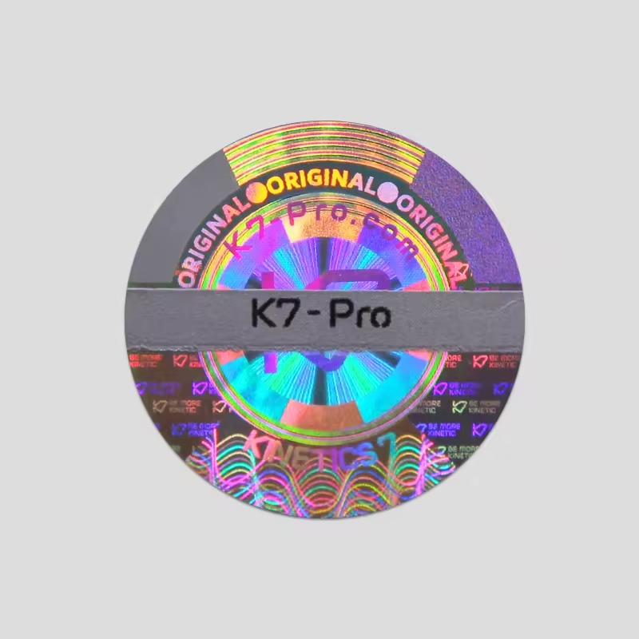
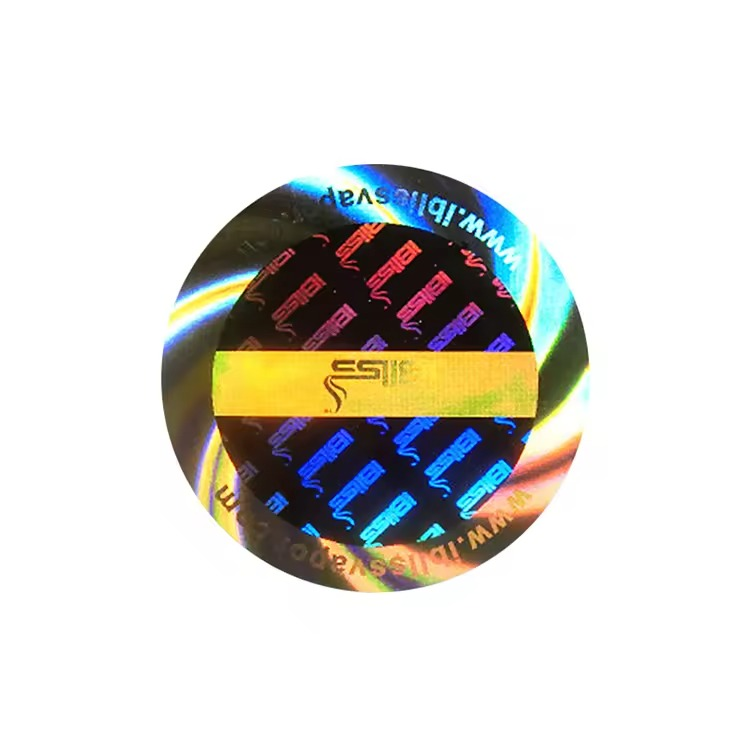
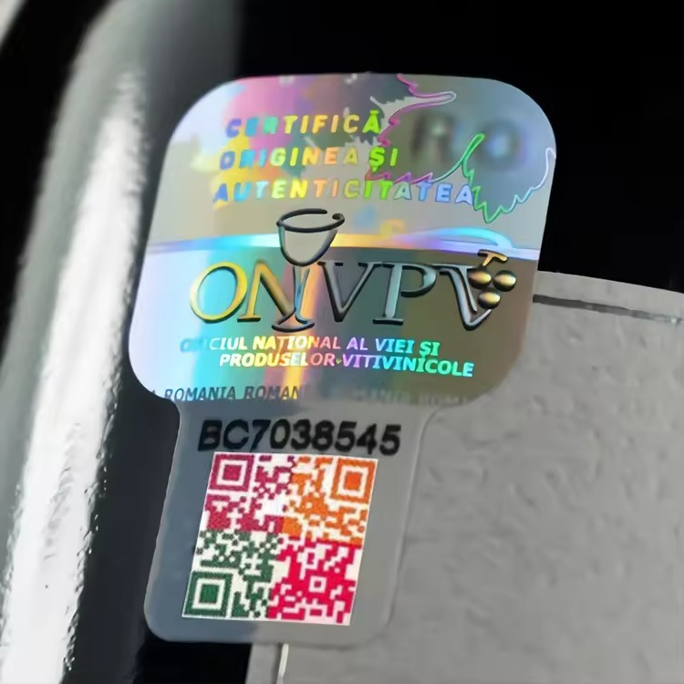

The short answer: VOID and destructible labels create different evidence. A VOID construction reveals a message or pattern when the face film is lifted. A destructible construction breaks apart, making clean removal difficult. Both can include holographic effects, but neither should be selected from appearance alone.

How a VOID hologram label behaves
A VOID label is designed so removal changes the label, the application surface, or both. Depending on the construction, a word, checker pattern or custom transfer image may remain visible. The purpose is to make opening or replacement easier to notice during inspection.
There are partial-transfer and total-transfer constructions. Those terms describe how the security layer separates, but the visible result still depends on the package surface, adhesive contact and removal conditions. Ask for a physical sample that represents the intended construction.
How a destructible hologram label behaves
A destructible label uses a fragile face material that tears or fractures when someone tries to lift it. Instead of producing one clear transfer message, it leaves damage through missing fragments, broken edges or a visibly disturbed seal. This approach is useful when the main requirement is to prevent the label from being removed and reapplied intact.
Very small pieces can be harder to clean from a surface, which may be desirable for tamper evidence but inconvenient during authorized service or recycling. That tradeoff belongs in the buying decision.
| Decision point | VOID label | Destructible label |
|---|---|---|
| Removal evidence | Reveals a transfer word or pattern | Face material tears into fragments |
| Inspection style | Useful when staff should recognize a specific message | Useful when any physical break is sufficient evidence |
| Cleanup | Depends on transfer construction and adhesive | Fragments may remain and take longer to remove |
| Design area | Can combine visible graphics with a transfer layer | Fine graphics must remain practical on a fragile face material |
| Primary test | Confirm transfer visibility on the actual package | Confirm the label fractures rather than lifting intact |
Start with the package opening path
A tamper seal only works when opening the package disturbs it. Place the label across a lid edge, carton flap, cap junction, sleeve seam or other controlled opening point. A beautiful hologram placed beside the opening may add decoration without adding meaningful tamper evidence.
Photograph the closed package from several angles and mark the exact seal position. Include the seal length needed on both sides of the opening. This gives the designer a real application area instead of an abstract sticker size.


Surface compatibility can overturn the choice
Coated cartons, uncoated paperboard, textured plastic, glass and painted metal do not accept adhesives in the same way. A rough fiber surface may create a different VOID transfer than a smooth plastic panel. A low-surface-energy plastic can allow a security label to release too cleanly. Curves and seams reduce contact area further.
Use a finished package from the production supplier, not a generic sample. Apply the seal using the intended pressure and allow the bond to develop according to the material guidance. Then open the package as a customer or inspector would.
Holographic appearance is not the security mechanism
A rainbow effect is visible and can make copying more difficult, but the actual tamper response comes from the construction. Specify both: the visible holographic design and the expected removal evidence. A custom logo, microtext-like pattern, serial field or QR code can add layers, provided each element remains readable at final size.
No visible label can prove authenticity by itself. A stronger program controls label purchasing and inventory, assigns package-specific placement, and connects serial or QR data to a record that the brand can manage.
Tamper label sample test
- Apply the seal to the finished production package, not a similar material
- Place it across the real opening path with adequate contact on both sides
- Confirm the holographic mark is recognizable in normal handling light
- Attempt slow peeling, quick lifting and normal package opening
- Check whether the VOID message transfers or the destructible face fractures as intended
- Inspect code readability before and after the attempted opening
- Photograph and retain the approved result with its material specification
When to choose each construction
Choose VOID when a clear transferred message will help warehouse staff, retailers or customers recognize that a seal has been opened. Choose destructible when the priority is preventing intact removal and reapplication. Consider a combined custom security program when the product also needs visible branding, serial tracking or online verification.
What to send for a useful quotation
Provide the package material, a close photo of the opening, the available seal area, quantity, preferred shape and the evidence you expect after removal. State whether the seal also needs a logo, QR code, serial number or repeated holographic pattern. RP can prepare a free digital proof, but physical package testing should be part of final approval.
Specify the tamper response, not just the hologram
Send a package photo and describe what should remain visible after opening. We can help compare VOID and destructible directions for a custom proof.
Chat on WhatsAppFAQ
What is the difference between VOID and destructible hologram labels?
A VOID label reveals a transfer message or pattern when removed. A destructible label fractures into pieces so it cannot be lifted intact. Exact results vary by construction and package surface.
Which tamper label is better for a cardboard box?
Either may work, but carton coatings and textures vary. Test the selected construction on the finished box and across the real flap or closure.
Can a hologram label prove a product is authentic?
It can provide a recognizable security feature, but it does not prove authenticity alone. Controlled sourcing, placement, serial data and a verification record make the program more meaningful.